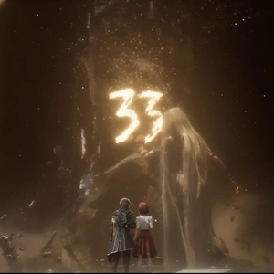
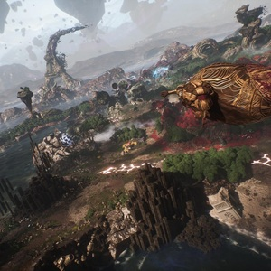

About the Game

We are Expedition 33.
Story
“For those who come after...”
Once a year, the Paintress wakes and paints upon her monolith. Paints her cursed number. And everyone past that age turns to smoke and fades away. Year by year, that number ticks down and more of us are erased. Tomorrow she’ll wake and paint “33.” And tomorrow we depart on our final mission - Destroy the Paintress, so she can never paint death again.We are Expedition 33.
Sandfall Interactive
Developer Team
- GUILLAUME BROCHE
- MICHEL NOHRA
- THOMAS FRAPPART
- THIBAULT LEBLAN
- VICTOR DELEARD
- JENNIFER SVEDBERG-YEN
- TOM GUILLERMIN
- FLORIAN TORRES
- JEROME VAGLIENTI
- VICTOR BOULEZ
- NICHOLAS MAXSON-FRANCOMBE
- CARLA DEVEZE
- MATHIEU COSTAT
- ALEXANDRE BRETON
- ALAN REYNAUD
- AMANDINE MAREST
- ARMANDE LECOINTRE
- LEO PARIS
- WILLIAM TOMASI
- TRISTAN FLEURY
- ROMAIN CHANUT
- LORIEN TESTARD
- MAXANCE PLAYEZ
- OLIVIER PENCHENIER
- RAPHAEL JOFFRES
- ALICE DUPORT-PERCIER
- FRANCOIS MEURISSE
- BENJAMIN DIMANCHE
- VINCENT CONSTANTIN-TURKI
- EMILIE PEREZ
- NAJA DALMAGNE
- MONOCO (Woof)
World
“Ready to sail like a snail!”
Explore an enchanting realm populated by surreal adversaries. Wander through breathtaking landscapes, from the Island of Visages to the Forgotten Battlefield, discovering secrets and hidden quests along the way. Find allies of fortune in creatures of legend. Recruit special companions to access new travel methods and discover secret areas in the World Map. 
Gameplay
“Tomorrow comes.”
Clair Obscur: Expedition 33 is a ground-breaking turn-based RPG with unique real-time mechanics, making battles more immersive and addictive than ever.In this evolution of JRPGs, real-time actions enhance the heart of turn-based combat. Craft unique builds for your Expeditioners that fit your playstyle via gear, stats, skills, and character synergies. Open an active dimension in combat - dodge, parry, and counter in real time, chain combos by mastering attack rhythms, and target enemy weak points using a free aim system.